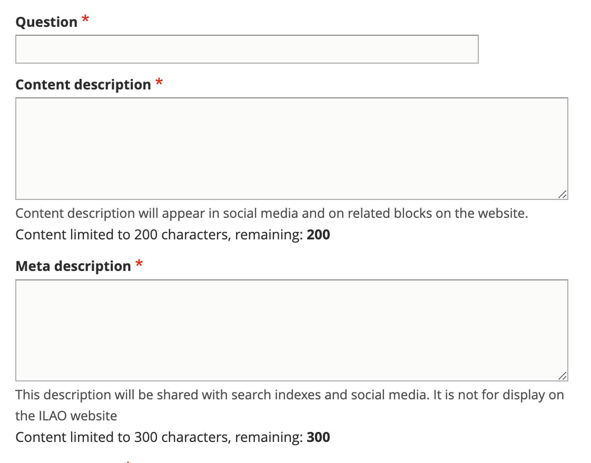

Creating a Legal Question
Legal questions can potentially “stand alone” or be part of a larger FAQ within a specific DIY Legal Solution packet or attached to a specific legal option.
Note
Due to changes in approach, use the New Accepted Answer section and not the Old Accepted Answer, Old Jurisdiction, and Old Negate Jurisdiction fields.
Add Question and Description
Add the Question title. The title should be drafted as a question.
Add a content description. This is the description that will be used if the question is displayed independently on our website.
Add a meta description. This is the description that will be used in social media, search indexes, and in any API. This should be limited to 300 characters.
See :ref:cms_style_guide
Categorize the legal problem
Tag the legal problem to one or more navigational IA tags. This is used to manage the drill down.
Tag the legal problem to one or more legal issues. This is used to associate with Get Legal Help tools.
Select the primary legal category. This is used to keep the information organized when it is tagged to multiple primary categories (for example, we may tag a criminal records issue to Business & Work and Crime & Traffic).
Tag the position of the question (neutral, plaintiff/petitioner/client, defendant/respondent/agency)
Select the primary level 2 navigation term. This is used to help with breadcrumbs, reporting, and Guided Navigation. This single term comes from the navigational IA taxonomy.
Optionally add a disambiguation tag to distinguish between similar questions. For example, What is the fee to file? may be a question for bankruptcy cases, small claims, and name changes but the answer varies depending on the case type.
Note
The primary level 2 navigation category may be used to generate related questions when the content team has not selected related questions.
Draft the answer or answers
The accepted answer uses the Structured Text & Lists block.
Warning
Use the New Accepted Answer field
A question can have more than one answer. Each answer can be jurisdictionally limited and will be presented that way. For example, the question “How do I e-file my documents?” may have answers for Chicago, Cook County (but not Chicago), Kane County, Lake County, McHenry County, and Illinois (except for Cook, Kane, Lake, and McHenry counties).
For each answer:
Draft the answer in structured text
Tag it to the jurisdiction
If there are multiple answers, use the negate jurisdiction to make each answer exclusive
If there is only one statewide answer, remove the negate jurisdiction component
Add Content Management Metadata
Add an image for social media
Tag to annual updates, if applicable
Add the name of the author or subject matter expert, if known
Add any editorial notes
Add any content management tags
Provide any translation information:
Request translation to be created,
Mark translation as outdated,
Translation type
Translation status
Update Last full review by a SME, if required, per our content policy
Update last revised by staff, if required, per our content policy